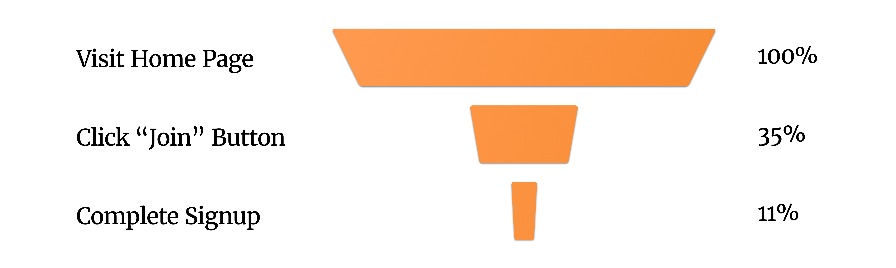
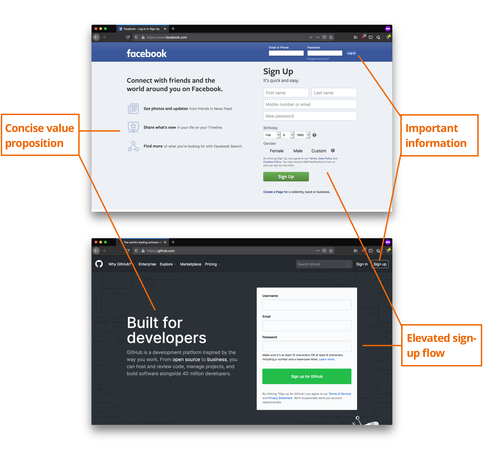
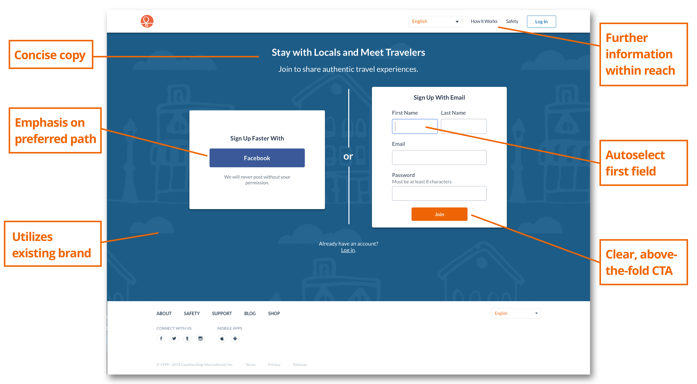

Maximizing Growth at Couchsurfing 🌱

The Focus: User Acquisition
Couchsurfing requires a large and active community to be successful - how do we ensure it continues to grow and thrive?
In the above diagram, I map out the design thinking process we followed to victory on this project.
Preliminary Research
Kicking off the new focus on member acquisition was a data-gathering phase. We invited a few couchsurfers into the office for interviews, distributed a mass survey, and dove into our rich trove of analytics data.
One startling statistic? Only 11% of people who reached the Couchsurfing homepage went on to become members. How can we get the rest to take that next step?
Our Hypothesis
If we remove a step from the sign-up funnel, then total conversion will increase.
Competitive Research
As a lean organization with only two designers and over 25 million members, we place an emphasis on analyzing our resource-rich competitors and adopting industry best practices. Through competitive research I found a number of sites that use their homepage as a sign-up page:
In contrast to these community-driven sites; our homepage overwhelmed members with testimonials, safety guides, and photos. This obfuscated our "Join" call-to-action.
Designing a Solution
[some images of paper sketches]
- Information that was previously on the homepage has been moved to separate pages to provide a clear hierarchy
- Links to those pages are discoverable: occupying the desirable upper-right-hand corner
- A step in the account creation funnel is brought to the front, giving the page a clear purpose
- Measuring with a handy tool I created using Google Analytics data, the "Join" call-to-action appears above-the-fold for most visitors.
By dialing in the amount of content presented to prospective members, we were able to ensure that our most important information was properly highlighted and visible. My solution for another app I helped to design accomplished a similar goal.
Validation
On the qualitative side, I ran five user testing sessions collecting prospective member’s thoughts on a Marvel prototype of the new page.
For qualitative data, I worked with developers to launch an A/B/C test on our production server. I monitored sign-up conversions as well as key guardrail metrics.
With the winning variant implemented, Couchsurfing has seen a 21% increase in prospective members who went from browsing the homepage to becoming couchsurfers.
Conclusion
One of my favorite things about leading design for Couchsurfing’s web product is the intimacy with which I can involve myself in every step of the product cycle. During this project alone I was able to:
- Identify a fruitful opportunity through first-hand analysis of our data and conversations with prospective members
- Design a scientific experiment with a hypothesis, multiple variants, and quantifiable variables/constants
- Create and iterate upon variant wireframes and high-fidelity prototypes
- Collaborate with web developers to deploy and monitor the variants
- Execute upon the experiments’ outcome and prescribe follow-ups